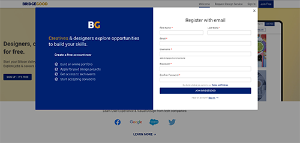
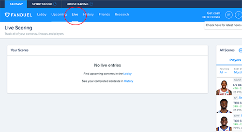

For this final project, I am planning to update my MadLib project and add the things I wish to add before.
Comparison
One comparison I found online is a portfolio website called BRIDEGOOD. I like how they use overlay as the sign up section. I am planning to use lots of overlay for my madlib because my theme is on Naruto and not everyone know the detail about the anime. I want to put a question mark next to each insert and when user click on to it then an overlay would show up explaining what each things is with picture provided.
Another comparison I found is a website called Fanduel. They have a very clear navbar, it clearly indicates which section you are currently in which I want to implement in my concept as well. Adding a different color or simple thing like a line underneath the nav helps guide the user which section they are at. Originally, I had this idea in my design comp but I did not have the time to execute it. I was planning to do multiple inserts and it extends to another section but again I ran out of time to do so.
Project Goal
My goal is to make my madlib more user friendly and easy to understand. Originally, I had lots of plans on what to put in the madlib, but due to the lack of knowledge in JavaScript, I gave up on some ideas that I had. My ultimate goal is to let someone who hasn’t watched Naruto be able to fill out all the options and have fun with it. I’m going to use the overlay method to show what all the options mean in Naruto context, or maybe the backstory of each option? Also, I will be using a step method and would underline the section the user is in on the navigation bar.
Interaction Strategies
I am not planning to remove anything but to add more things hoping to make the madlib more interesting. I am going to keep the image of naruto and the floating ball. But in the result screen, I want to add an image of naruto turning around facing the audience similar to what I had in my design comp. I am also considering adding a background sound like yelling “Rasengan” once the summit button is clicked. In addition to what I said above, I want to add an overlay explaining to the user what each option is, especially to the user that never watches Naruto.
Experience Goals
Like I mentioned in my project goal, I want the user to get all the options given to them. I don’t want my user to submit their selection with a question mark in their head. I will not add too many options as it might be too much cognitive load. But one of the challenges I think I will have is to find the shortest way to explain the option to the user. Because too much text might be too overwhelming. But too little text might not be enough to explain everything to the user so I need to find the sweet spot.